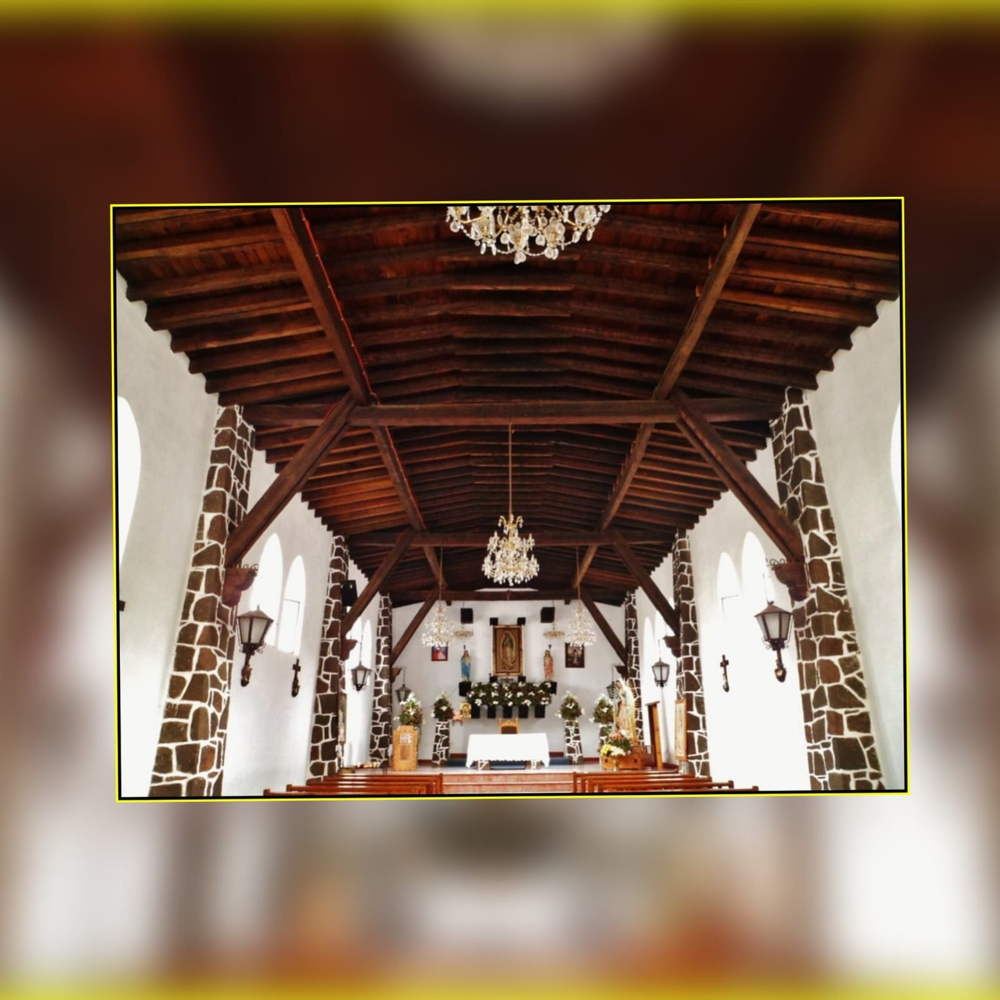
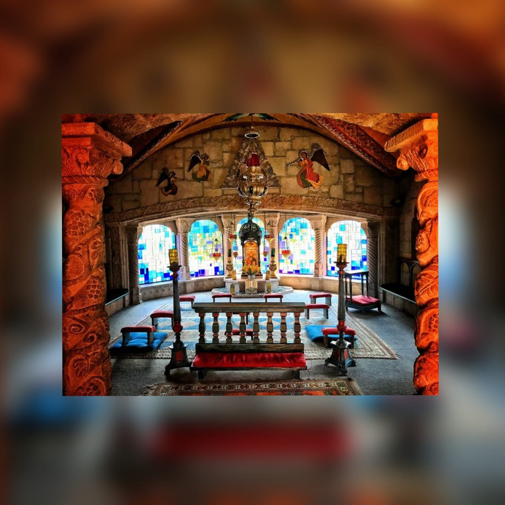
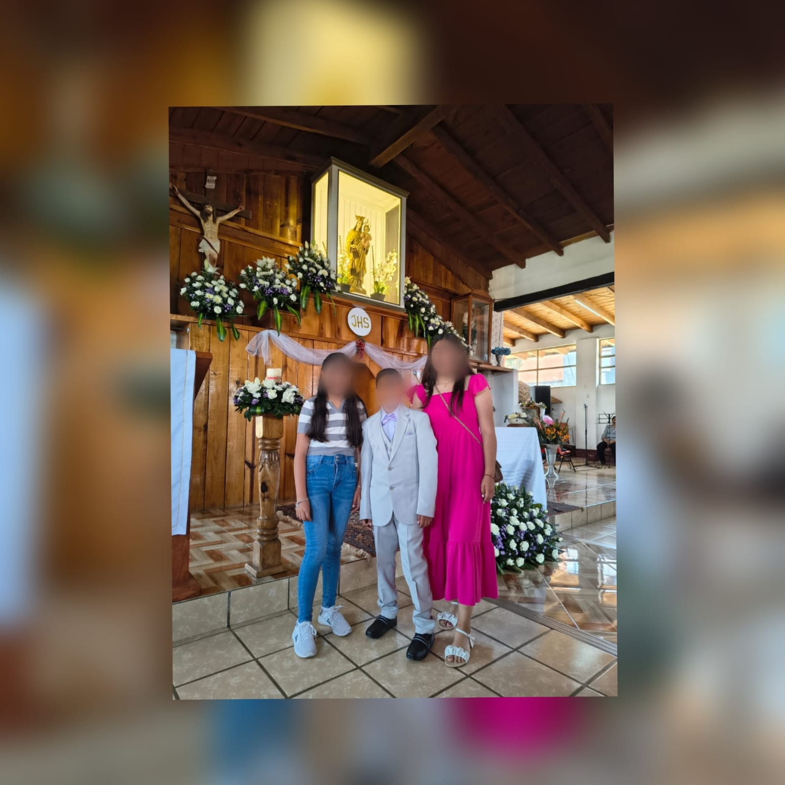

IGLESIA DE SANTA MARIA AGUACATLAN - VALLE DE BRAVO
Ubicación:En el Barrio de Santa María Ahuacatlán, Valle de Bravo, Estado de México. En la calle Atardecer 121, en lo alto de una colina con vista al lago y al centro. Es la iglesia más antigua de Valle de Bravo y el barrio donde nació el pueblo.
Historia:Primero fue la Capilla del Calvario, hecha por los frailes franciscanos. En 1864 empezó su reconstrucción como templo y nunca se terminó del todo. Hoy tiene templo, capilla abierta, atrio y casa cural.
Lo más importante: El Cristo Negro Adentro está el Cristo Negro, la imagen más venerada de Valle de Bravo. La gente lo considera milagroso y curativo.Según la leyenda, era blanco y después de que se quemó su ermita en una pelea entre los de La Peña y los de Ahuacatlán, apareció intacto entre las cenizas pero ya negro. Eso se interpretó como señal de paz entre los dos pueblos.
Fiestas principales:1 al 3 de mayo: Fiesta del Señor de Santa María / Cristo Negro. Llegan miles de peregrinos a pedir favores.15 de agosto: Fiesta de la Asunción de la Virgen María. Hay novena, misas, procesión, banda, danzantes y reparto de pan bendito.

CAPILLA DE NUESTRA SEÑORA DE GUADALUPE
Ubicación: Barrio de La Capilla, en el Cerro de la Bolita, justo enfrente de la Parroquia de San Francisco de Asís. Por eso la gente solo le dice "La Capilla".
Historia: Valle de Bravo se formó con 4 barrios antiguos: La Capilla, Santa María Ahuacatlán, La Peña y San Antonio. Cada barrio tenía su capilla, y esta era la del barrio de La Capilla. La hicieron los frailes franciscanos en el siglo XVIII, cuando Valle de Bravo todavía era un pueblo chiquito. La construyeron sencilla, no lujosa, porque era una capilla de barrio.
Con el tiempo se volvió el centro del barrio: ahí se casaba la gente, se bautizaba, se hacían las fiestas y se reunía la comunidad. La han ido renovando poco a poco, sobre todo a mediados del siglo XX, pero sigue conservando su forma original.
Devoción: Está dedicada a la Virgen de Guadalupe, patrona de México.Información actualizada 2026: Sigue activa, con misas todo el año. Su fiesta patronal ya está programada:
Convite: 22 de noviembre3 al 11 de diciembre: Rosario del Alba 5:00 AM, Misa 6:00 AM, Rosario del Ocaso 5:00 PM, con procesión desde San Francisco de Asís hasta La Capilla12 de diciembre: Mañanitas 5:00 AM, Misa 6:00 AM, Misa Solemne y bendición de niños 12:00 PM, castillos de fuegos artificiales 10:30 PM

CARMEN DE MARANATHA
¿Qué es?No es una iglesia de barrio, es una Casa de Oración y de Retiro de los Carmelitas Descalzos. Es un lugar para orar, meditar y hacer silencio, lejos del ruido. Adentro parece un museo: tiene pinturas, esculturas, vitrales y capillas de Santa Teresa de Jesús, San Juan de la Cruz y Santa Teresita.
Ubicación:En la carretera Valle de Bravo - Amanalco / Valle de Bravo - Toluca, en Los Saucos, a unos 5 km del centro de Valle de Bravo. Carretera San Luis Mextepec - Valle de Bravo s/n.
Historia:Se construyó en la década de 1970 por los monjes Carmelitas Descalzos. Se fundó en 1975 y empezó a funcionar como casa de oración y de ejercicios espirituales en 1985.
Su nombre lo dice todo: Carmel en hebreo significa "jardín" y Maranathá en arameo significa "¡Ven, Señor!". O sea, es un jardín para recibir a Dios.
Horario actual:Abierto al público de martes a domingo, de 10:00 AM a 1:30 PM y de 4:00 PM a 6:00 PM. Los sábados hay misa a las 7:00 PM y domingos a las 11:00 AM.Lo actualizado 2026: Sigue muy activo con retiros. Por ejemplo, del 13 al 15 de noviembre de 2026 tienen Retiro de Oración y Silencio Teresiano-Sanjuanista, y del 27 al 29 de noviembre el seminario-retiro "Saber orar y con quién".

VIRGEN DEL CARMEN CASAS VIEJAS
Ubicación:En Casas Viejas, Valle de Bravo, Estado de México. En la Avenida 16 de Septiembre S/N, justo en el centro de la comunidad, pasando el arco de bienvenida de "BIENVENIDOS CASAS VIEJAS". Es la iglesia principal del pueblo de Casas Viejas.
Historia:A diferencia de Santa María Ahuacatlán y La Capilla, que son del siglo XVI y XVIII, esta es una capilla comunitaria más reciente.
Está registrada en el Catálogo Nacional de Bienes Culturales como Nuestra Señora del Carmen, con categoría de Capilla. No es un templo colonial grande, es un templo de pueblo, hecho para la comunidad de Casas Viejas.
Su importancia no es por ser antigua, sino porque es el corazón de Casas Viejas. Ahí se hace toda la vida del pueblo: misas, bautizos, bodas y sobre todo su fiesta patronal.Devoción: Está dedicada a la Virgen del Carmen, que carga al Niño Jesús. Su imagen es la que sale en procesión y la que adornan con flores rosas y blancas, girasoles y veladoras.
Información actualizada 2026 - Fiesta Patronal Casas Viejas 2026:Este año fue del 8 al 17 de julio de 2026, organizada por la Delegación y COPACI Casas Viejas:
8 al 16 de julio: Novenas diarias 6:30 PM en la Iglesia del Carmen13 al 19 de julio: Feria del pan dulce y juegos mecánicos 14 de julio: Procesión de la iglesia a Grúas Guzmán con la imagen 15 de julio: Novena en Grúas Guzmán, banda, mojigangas, quema de torito y fuegos artificiales 8:00 PM 16 de julio - día grande: 6:00 AM entrega de la imagen con mañanitas, 12:00 PM recepción en el arco de Casas Viejas, 1:00 PM Misa de Acción de Gracias, 2:00 PM bendición de cabalgata, danzas, palo encebado y mojigangas, 9:00 PM quema de castillo 17 de julio: Baile gratis de clausura 5:00 PM con Cuerda Sierreña de Valle de Bravo y Los 5 de Valle de Bravo